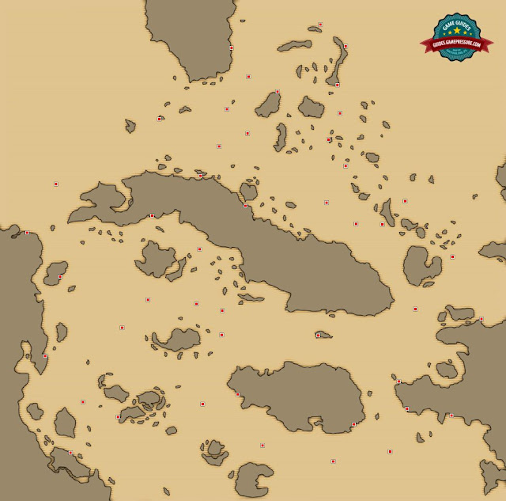
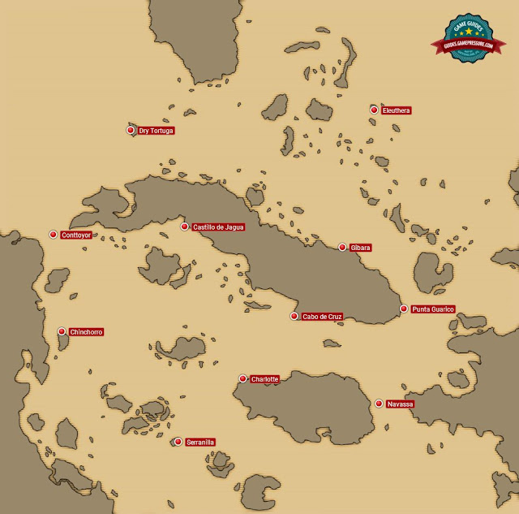
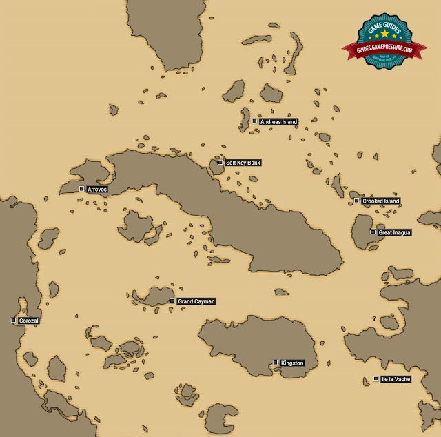
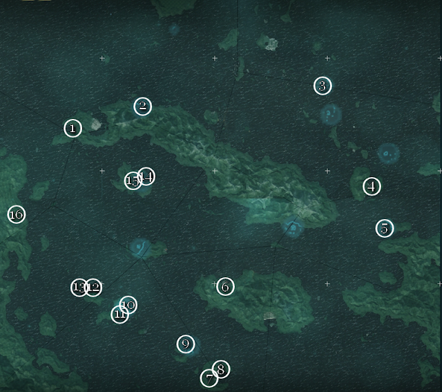
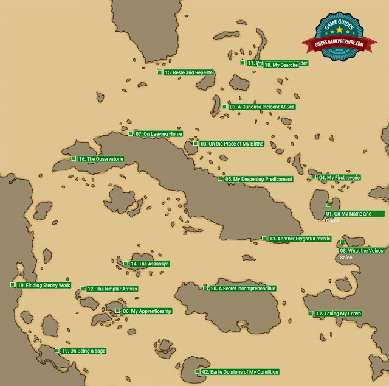
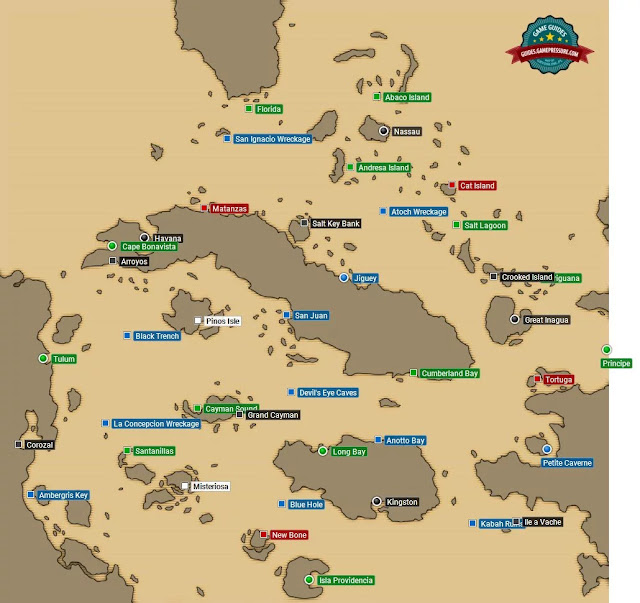
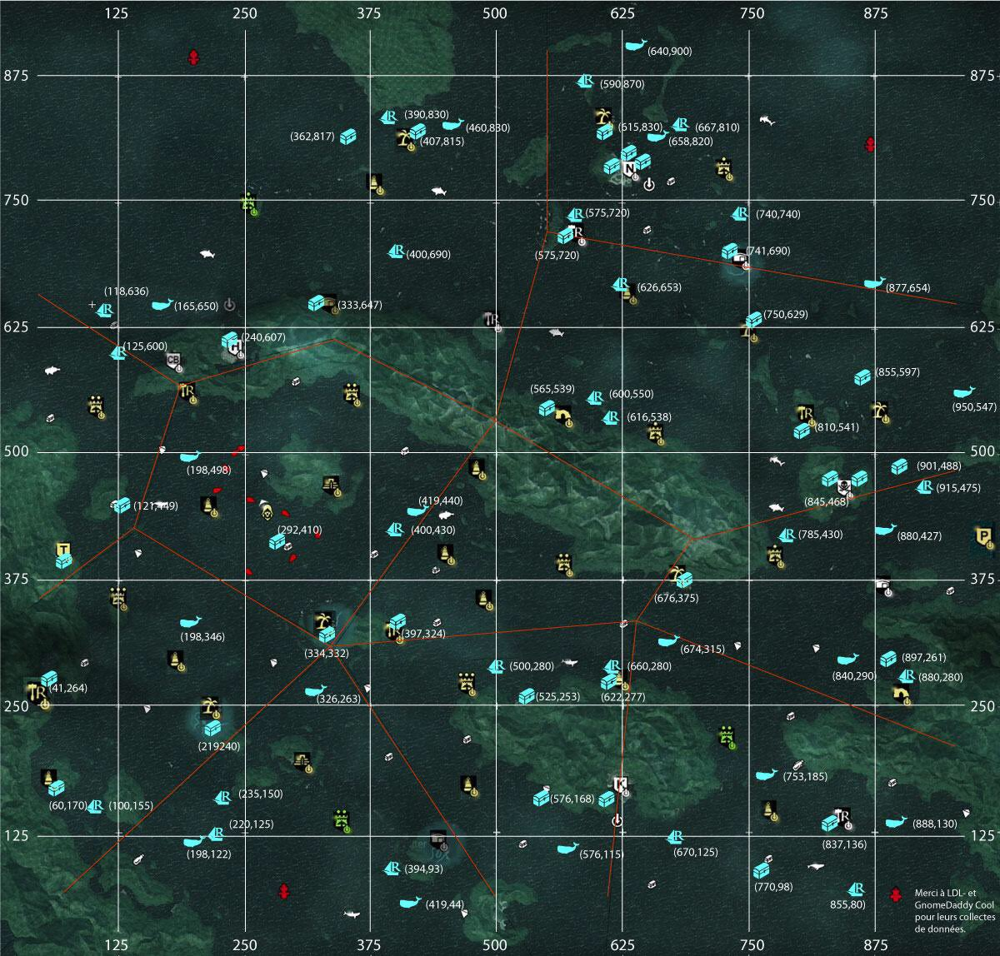

Assassin's Creed Black Flag
Resumo da Historia
Assassin's Creed IV: Black Flag é um videojogo de ação-aventura desenvolvido pela Ubisoft Montreal, juntamente com sete outros estúdios da Ubisoft. Black Flag é o sexto jogo principal da série Assassin's Creed e uma sequela da história moderna de Assassin's Creed III e uma analepse para a sua história ancestral. Foi editado durante os meses de Outubro e Novembro de 2013 pela Ubisoft para Microsoft Windows, PlayStation 3, PlayStation 4, Xbox One, Xbox 360 e Wii U.
Assassin's Creed IV: Black Flag segue as aventuras de Edward James Kenway, um notável pirata e corsário que viveu nas Caraíbas durante a Época Dourada da Pirataria no início do século XVIII, pai de Haytham Kenway e avô de Ratonhnhaké:ton (Connor Kenway), os personagens jogáveis de Assassin's Creed III. A história de Edward começa quando este se vê acidentalmente no meio do eterno conflito entre Assassinos e Templários. Enquanto isso os piratas mais famosos se juntaram em Nassau, Bahamas, na tentativa de estabelecer uma das primeiras sociedades democráticas. Ao contrário dos jogos anteriores da série, em Black Flag o foco do jogo é mais dirigido à exploração naval no mapa de mundo aberto, mas mantendo o combate e o sistema de infiltração típicos da série. Também está incluída uma componente multijogador, apesar de só ser jogada em missões e cenários em-terra.
Conquistas/Troféus
Troféus Single-Player:
Niveis dos troféus: Bronze, Prata, Ouro.
Ninguém Nasce Heroi:
Complete memory sequence 1 (Complete a sequência de memória 1)
Troféu relacionado a história, continue jogando para desbloqueá-lo.
Foi Bom Enquanto Durou:
Complete memory sequence 2 (Complete a sequência de memória 2)
Troféu relacionado a história, continue jogando para desbloqueá-lo.
Uma Vida Pirata pra Mim:
Complete memory sequence 3 (Complete a sequência de memória 3)
Troféu relacionado a história, continue jogando para desbloqueá-lo.
Sem Desculpas:
Complete memory sequence 4. (Complete a sequência de memória 4)
Troféu relacionado a história, continue jogando para desbloqueá-lo.
A Morte do Caixeiro-Viajante:
Complete memory sequence 5 (Complete a sequência de memória 5)
Troféu relacionado a história, continue jogando para desbloqueá-lo.
Misturando os Remédios:
Complete memory sequence 6 (Complete a sequência de memória 6)
Troféu relacionado a história, continue jogando para desbloqueá-lo.
O Martelo Cai:
Complete memory sequence 7 (Complete a sequência de memória 7)
Troféu relacionado a história, continue jogando para desbloqueá-lo.
À Deriva:
Complete memory sequence 8 (Complete a sequência de memória 8)
Troféu relacionado a história, continue jogando para desbloqueá-lo.
Uma Nova Esperança:
Complete memory sequence 9 (Complete a sequência de memória 9)
Troféu relacionado a história, continue jogando para desbloqueá-lo.
Minha Enganosa Sina:
Complete memory sequence 10 (Complete a sequência de memória 10)
Troféu relacionado a história, continue jogando para desbloqueá-lo.
Pra Baixo Há Tanto Tempo:
Complete memory sequence 11 (Complete a sequência de memória 11)
Troféu relacionado a história, continue jogando para desbloqueá-lo.
Como Começar de Novo:
Complete memory sequence 12 (Complete a sequência de memória 12)
Troféu relacionado a história, continue jogando para desbloqueá-lo.
Já Podia Prever:
Complete memory sequence 13 (Complete a sequência de memória 13)
Troféu relacionado a história, continue jogando para desbloqueá-lo.
Hack de Rotina:
Complete present day mission 2 (Complete a missão do presente 2)
Troféu relacionado a história, continue jogando para desbloqueá-lo.
Está Ficando Estranho Por Aqui:
Complete present day mission 3 (Complete a missão do presente 3)
Troféu relacionado a história, continue jogando para desbloqueá-lo.
Companheiros de Bunker:
Complete present day mission 4 (Complete a missão do presente 4)
Troféu relacionado a história, continue jogando para desbloqueá-lo.
Está Tudo Certo:
Complete present day mission 5 (Complete a missão do presente 5)
Troféu relacionado a história, continue jogando para desbloqueá-lo.
Seguindo à Risca:
Complete 100% of all main mission constraints (Complete 100% de todas as restrições das missões principais)
Assim como praticamente todos os jogos da série, desde "Brotherhood", devemos completar todas as restrições extras das missões principais. Quem já joga a série a um tempo, já sabe como elas funcionam, mas, se você é novato, aqui vai uma explicação. A cada missão do jogo, existirão objetivos extras, que você pode, ou não, completá-los. Óbvio que para o troféu nós somos obrigados a fazê-los. Esses objetivos envolvem situações como "não seja detectado" ou "mate o seu alvo com um assassinato aéreo", e assim vai.
Esse troféu não chega a ser difícil, apenas leva tempo. Quanto mais objetivos você conseguir efetuar já na primeira jogatina, menos você terá para a segunda tentativa, e ganhará o troféu mais rápido. Vale lembrar que o troféu só se aplica as missões principais, as secundárias não contam para o seu desbloqueio. Para repetir uma missão, vá em "Registro de Progresso" e localize as missões que não estão com os objetivos extras completados.
Ressaca:
Wake up in a haystack (Acorde em um palheiro)
Esse troféu é escondido pois a maioria das pessoas não sabem que existe a possibilidade de ficarmos bêbedos no game. Se pensarmos bem, seria até estranho não existir essa chance a um pirata.
Mas enfim, o troféu pede para que nós acordemos em um palheiro, e para isso é preciso, obviamente, que fiquemos bêbados. Sendo assim, basta ir a um dos 8 bares existentes no jogo, e após desbloqueá-lo (explicado sobre isso no troféu "Rato de Bar"), você poderá ir ao canto da estante e pegar uma garrafa por uma certa quantia de dinheiro (uns 5R cada). Após tomar cerca de 5 garrafas, você fica bêbado, a tela fica embaçada e você irá automaticamente acordar em um palheiro.
Silêncio, Idiota!:
Kill a guard ringing a bell (Mate um guarda badalando um sino)
Primeiramente, devemos deixar vários parâmetros de explicações aqui. "Sinos" são partes essenciais existentes nos "Armazéns", servindo para que algum guarda, no momento em que lhe ver, badale ele e traga reforços. Os "Armazéns" são introduzidos aos jogadores na "Sequência 3" da campanha principal, e logo após isso, virá uma atividade secundária em várias localizações.
Para o troféu, você deve iniciar o saqueamento de um "Armazém", e ser visto propositalmente (ou acidentalmente) por um guarda. Nesse momento, algum deles irá ficar com um símbolo de sino na cabeça. Isso quer dizer que ele irá badalar o sino e chamar reforços. Para executar o troféu, fique atento e só ataque este guarda quando ele estiver muito perto de tocar o sino.
Se você esvaziou todos os armazéns existentes no jogo, e ainda sim não ganhou o troféu, não se preocupe, você pode repetir a "Sequência 3, Memória 5" (se tratando da missão a que somos introduzidos a esses objetivos extras) e tentar novamente desbloquear o troféu.
Dominado:
Complete every activity in a single location (Complete todas as atividades em um único local)
No game, cada localização existirão diversas tarefas para se fazer, dentre elas recolher baús, completar "Contratos de Assassinatos", coletar os "Fragmentos do Animus", sincronizar "Panoramas" e assim vai... Para o troféu, devemos escolher qualquer localização, e nela, completar todas as atividades existentes.
Se você quiser desbloquear este troféu rapidamente, é recomendado que você escolha alguma ilha, ou porto para focar nas atividades, pois daí serão poucas existentes. Quando o local estiver totalmente completo, ele ficará com a cor dourada no mapa.
Tumba Saqueada:
Unlock the secret door in Tulum (Desbloqueie a porta secreta em Tulum)
Desbloquear a porta secreta em Tulum faz parte de uma missão secundária existente no jogo. Para desbloqueá-la, você deverá achar as 16 "Pedras Maias", um dos colecionáveis do jogo. A cada localização, você deverá resolver um simples quebra-cabeça com a Visão de Águia, e depois pegar a pedra. Coletando todas elas, você poderá ir em Tulum e lá resgatar o seu prêmio. Veja um vídeo com a localização de todas as pedras mais.
SPOILER: O prêmio é a "Armadura Maia", na qual faz com que o jogador não sofra danos de tiros e dardos. Óbvio que para isso, você deverá estar usando ela.
Assassino de Assassina:
Harpoon a killer whale (Mate uma orca com um arpão)
Matar uma orca não é tarefa fácil, e necessitarão diversas outras tarefas até executar ela em específica. Primeiramente, fique sabendo que as Orcas são encontradas na região chamada "Cruz" do mapa. Mas isso é o de menos, pois primeiro devemos ter certeza de conquistar o "Forte" desta área (explicado sobre eles no troféu "Rei do Castelo").
Após fazer isso, certifique-se de que você melhorou três coisas essenciais no seu Navio: a "Armadura do Barco", o "Número de Arpões" e a "Força dos Arpões". Tente deixar essas melhorias no máximo, ou ao menos, perto do máximo. Com todas essas tarefas feitas, daí sim, vá na localização da Orca, mate-a e o troféu é seu.
Ajudando um Amigo:
Complete a Templar Hunt sequence (Complete uma sequência de Caçada Templária)
Uma "Caçada Templária" também é uma missão secundária existente no jogo. Se trata de recolhermos as 5 "Chaves Templárias", para assim, desbloquearmos um prêmio no nosso esconderijo. Uma dessas chaves é recolhida na campanha principal, ao matarmos um alvo na "Sequência 3". Após isso, as outras chaves estarão espalhadas no mapa com o símbolo da "Ordem dos Assassinos".
Cada missão trata-se de ajudar um Assassino, no qual deveremos executar alguns favores para ele, assim nos passando a localização do Templário que possuí a chave. Cada uma das 4 missões exigirá que façamos 4 memórias diferentes, ou seja, 4 favores até alcançarmos o nosso alvo.
SPOILER: Coletando todas as chaves você desbloqueará a "Armadura Templária", basta levá-las de volta para o seu esconderijo e colocá-las na fechadura do seu escritório.
Dono do Mar:
Complete all naval contracts (Complete todos os contratos navais)
Os "Contratos Navais" novamente fazem parte das diversas missões secundárias existentes no jogo. Existem ao todo 15 contratos navais, nos quais só são encontrados nos "Fortes", ou seja, a primeira coisa que você deve fazer é desbloquear todos eles (explicados no troféu "Rei do Castelo").
ATENÇÃO: não se confundam, pois o símbolo dos contratos navais são IGUAIS aos "Contratos de Assassinato", porém estes últimos não são necessários para o troféu. Eu fui uma pessoa que se confundiu, então vocês não precisam se confundir também.
Rei do Castelo:
Capture all forts (Capture todos os fortes)
Sem dúvida, uma das coisas mais necessárias de se fazerem, ainda que sejam consideradas missões secundárias, são capturar e desbloquear cada "Forte" existente no jogo. Existem ao todo 10 fortalezas, e capturando cada uma delas irá liberar o acesso livre na área em volta e mostrar os segredos existentes naquela região do mapa, dentre elas baús e fragmentos espalhados, além de dizer qual é a cidade ou porto existente naquela área.
Quando você ataca um forte, existiram as defesas que deverão ser destruídas. Cada forte tem um número específico delas, sendo que um pode ter 2 defesas e o outro pode ter 10. Ao terminar essa parte, você será liberado a adentrar no forte, tendo assim que matar o "Oficial" daquele lugar. Ou seja, não se preocupe com os outros soldados, a sua tripulação estará matando eles, foque literalmente no oficial. Executando ele, o resto do pessoal irá se entregar, e você só deverá assassinar o "Capitão" (sendo uma coisa linda de se ver). Faça isso em todos os 10 fortes e o troféu é seu.
Funcionário do Mês:
Complete 25 Abstergo challenges (Complete 25 desafios Abstergo)
"Desafios da Abstergo", assim como o nome diz, são alguns objetivos extras que o game trás, sendo parte da máquina do Animus, no qual coloca o jogador a executar essas tarefas, se quiser ou não. Mas claro, para o troféu devemos, ao menos, completar 25 desses desafios. Mas, para a nossa sorte, o troféu não chega a ser difícil, por vários motivos.
O primeiro deles é que ao todo existem 100 desafios, mas apenas devemos completar 25 para o troféu desbloquear. Além disso, esses desafios são divididos em classes, e cada uma apresenta pelo menos uns 5 muito fáceis, e que acabaram desbloqueando sozinhos, fazendo as suas ações normais do jogo. Comigo por exemplo, esse troféu desbloqueou sozinho, e eu nem fui atrás dos desafios. Veja as classes de desafios existentes:
- Assassino = 15 desafios;
- Pirata = 20 desafios;
- Explorador = 16 desafios;
- Lutador = 12 desafios;
- Caçador = 15 desafios;
- Menino de Ouro = 15 desafios;
- Simulação = 7 desafios.
Negócios e Lazer:
Earn 50.000 reales (Ganhe 50.000 reales)
Este é um daqueles troféus acumulativos nos quais nós não devemos nos preocupar. 50,000 reales não é pouco dinheiro, mas sem dúvida você o adquire facilmente ao longo jogo. Para isso, basta ir jogando normalmente o game, ganhando dinheiro com as missões.
Caso você comece a se preocupar com o troféu, lembre-se de vender as suas mercadorias mais inúteis (como açúcar e rum), fazer contratos, tanto navais quanto de assassinatos, saquear baús, achar tesouros, etc...
"Sereio":
Swim a total of 1 nmi (Nade um total de 1 milha náutica)
Este é outro troféu acumulativo. Nos EUA que são mais usados as milhas náuticas, aqui no Brasil, 1 milha náutica, o total que devemos nadar, equivale a mais ou menos 1900 metros.
Como água é o recurso natural de maior quantidade no jogo, nós iremos a todo momento estar nadando. Ou seja, esse troféu não é um problema, em pouco tempo você o adquire.
Vista-se:
Craft the Hunter outfit (Faça a vestimenta de Caçador)
Existem vestimentas no jogo nas quais só podem ser construídas no menu de "Ofícios". Uma delas é a de "Caçador". Não há simplesmente nada que justifica que os produtores tenham escolhido essa vestimenta em especial para o troféu. Mas enfim, para construir ele deveremos ter dois materiais: "Pele de Bugio Vermelho" e "Pele de Jaguar Branco".
Para obter a pele do jaguar, faça a "Caçada Templária" da Assassina Opia Apito. Na primeira missão dela deveremos matar um desses jaguares, basta você ir recolher a sua pele após isso. Já o Bugio Vermelho, pode ser encontrado em Tortuga. Porém, é altamente mais recomendável que se compre essas peles nos "General's Stores" espalhados pelo jogo. Construa a vestimenta e o troféu é seu.
Vida Bandida:
Plunder 30 ships (Saqueie 30 navios)
Um dos troféus mais fáceis do jogo e totalmente acumulativo. Saquear navios é simplesmente uma das coisas mais obrigatórias de se fazer no game inteiro. Sendo assim, 30 é um número equivalente a quase nada se comparado ao que teremos de fazer no nosso progresso.
Para saquear um navio, primeiramente você terá que derrotá-lo em combate, ou seja, destruir as suas velas. Isso acontecerá quando o nível de vida do navio inimigo estiver acabado. Nesse momento, não atire mais nele, apenas chegue perto, e aperte "O". Você terá que terminar algumas tarefas, e após isso, irá ter constado mais um saqueamento.
Demônio do Caribe:
Defeat all 4 legendary ships (Derrote 4 navios lendários)
Quando você pensa sobre "Navios Lendários", o próprio jogo faz questão de lhe deixar assustado. Realmente, eles podem ser considerados um bom desafio. Ainda sim, derrotá-los pode se tornar algo mais fácil. Mas antes de falarmos sobre isso, vale explicar sobre estes navios. Eles são considerados lendários, mas basicamente são da mesma classe dos "Man of War's", ainda que causem mais danos e com mais frequência.
A primeira coisa que você deve fazer é liberar todos os "Fortes" do jogo, pois são através deles que é dada a localização de cada "Navio Lendário". Cada um dos 4 se encontram em um canto do mapa, e serão representados por um símbolo de navio vermelho. Após isso, ainda não os enfrente, certifique-se de que você possuí todas as melhorias do Jackdaw, ou ao menos seguintes principais:
- Armadura do Casco (Ao máximo);
- Canhões Laterais (Ao máximo);
- Força do Aríete (Ao máximo);
- Força da bala de canhão (Ao máximo);
- Morteiro (Ao máximo);
- Armazenagem do Morteiro;
- Disparo Pesado (Ao máximo);
- Armazenagem do Disparo Pesado.
Com essas melhorias prontas, vá na localização dos navios, e em cada um deles, lembre-se de abusar das armas. A longa distância use bastante morteiros, quando ele vier para cima, o acerte-o com o aríete (isso causa muito dano neles), e quando estiver de lado perto deles, lembre-se dos disparos pesados. Veja um vídeo caso esteja tendo dificuldades:
Destruidor:
Fully upgrade the Jackdaw (Aprimore o Gralha por completo)
Sem sombra de dúvida um dos troféus mais demorados de se alcançar. O nosso querido Jackdaw (ou Gralha, como você preferir), possuí diversas melhorias e aprimoramentos que só podem ser comprados. Porém, o chato é que não é simplesmente ter o dinheiro e ir lá comprar as coisas. Melhorar a grande maioria dos atributos do navio, exige que nós tenhamos materiais. Os materiais que existem no jogo são: açúcar, rum, tecido, madeira e metal. Porém, para fazer as melhorias de combate do Jackdaw, apenas precisamos da madeira e do metal.
Mas, não acaba por aí, pois existem melhorias que mesmo com os materiais necessários, você terá que ter a planta dela. Essas plantas só podem ser achadas em localidades específicas, e a grande maioria se encontra em tesouros de navios submersos. Existem 18 planos (mas alguns são da classe de "Aparência do Gralha", no qual não estão contados para este troféu). Veja, após, um vídeo com a localização de todos eles, e a seguir, a lista de quais melhorias devem ser obtidas as plantas, além de seus pontos geográficos:
- Armadura do Casco = Localização: San Ignacio, 379, 770
- Canhões Laterais = Localização: O Buraco Azul, 471, 170
- Força do Aríete = Localização: La Conception Shipwreck, 181, 296
- Força da Bala de Canhão = Localização: Ruínas de Kabah, 769, 145
- Morteiro = Localização: Antocha, 630, 660
- Força do Giratório = Localização: Caverna Olho do Mal, 487, 357
- Disparo Pesado = Localização: Misteriosa, 307, 195
- Força dos Barris Flamejantes = Localização: San Juan, 479, 487
- Armazenagem do Disparo Pesado = Localização: Caverna Petite, 901, 263
- Armazenagem de Morteiros = Localização: Matanzas, 333, 650
- Armazenagem dos Barris Flamejantes = Localização: Isla Providencia, 502, 044
- Força do Arpão = Localização: Ilha Andreas, 579, 720
Setes Mares Fatais:
Explore all underwater shipwrecks (Explore todos os navios naufragados submersos)
"Navios naufragados" fazem parte de um tipo de missão secundária, nas quais, através do "Sino de Mergulho", podemos explorá-los. Existem ao todo 10 navios naufragados, todos representados por esses sinos no mapa. Só podemos iniciar essas tarefas, depois da Sequência 5 da campanha principal.
Após começar uma das explorações, poderemos encontrar no mar tesouros e fragmentos do animus, mas vale lembrar que existirão muitos perigos na água, dentre tubarões, serpentes marinhas e espinhos. Entre e saia de todos esses 10 navios naufragados (não precisa teoricamente pegar todos os colecionáveis do local) e o troféu é seu.
Rato de Bar:
Unlock all taverns (Desbloqueie todas as tavernas)
As "Tavernas" são bares existentes no jogo, nos quais nós podemos: jogar jogos de tabuleiros, resgatar informações sobre comboios navais, recrutar membros para a tribulação e até mesmo se divertir com as belíssimas músicas que tocam no local. Porém, todas essas coisas só podem ser feitas se as "Tavernas" forem primeiramente desbloqueadas.
Para desbloquear uma taverna, basta achá-la, e ir em direção ao 'barman'. Clique na opção de falar com ele. Automaticamente uma custcene irá se iniciar, e uma briga de bar entre o Edward e mais 4 bêbados irá começar. Após derrotar todos eles, o bar está liberado. O segredo deste troféu é que algumas tavernas não são mostradas no mapa, mesmo quando você está na cidade em que a localização delas se encontram. Por isso, é bom um guia para lhe ajudar. Veja o vídeo:
Bucha de Canhão:
Recruit 500 crew members (Recrute 500 membros para a tripulação)
Marujos são simplesmente essenciais para qualquer ação existente no jogo, relacionado ao uso do Jackdaw. Por isso, é sempre importante estarmos com o nível de tripulação no máximo, ou ao menos, perto disso. O troféu em questão é totalmente acumulativo. Devemos recrutar um número total de 500 membros.
Você só pode recrutar marujos quando lhe faltam marujos (o que será mostrado na barra em baixo da vida do Jackdaw), sendo assim, existirão diversos meios de recrutamento, dentre eles resgatar homens naufragados no mar (o que acontece a todo momento), salvar piratas da execução (no qual será avisado quando acontecer) e comprar marujos (através das tavernas desbloqueadas). Porém, lembre-se que para atingir os 500 números de tripulação mais rapidamente, você deve melhorar o "Alojamento da Tripulação".
Eu Posso Arrumar!:
Fully upgrade your hideout (Aprimore por completo o sue esconderijo)
Um troféu realmente irritante. Eu digo irritante pois já não bastava o jogador ter que gastar um gigantesca quantia de dinheiro fazendo todas as melhorias do Jackdaw? Para os produtores, não. Aqui devemos também fazer todas as melhorias existentes, mas agora para a porcaria do nosso "Esconderijo".
O grande problema é que existem apenas 8 melhorias, mas elas são muito caras. Para fazer um 'upgrade' vá dentro do escritório da sua casa, e selecione as embalagens perto da janela. Mas, as outras melhorias só serão possíveis de comprar através de um marujo no perto do "Esconderijo".
Cartógrafo:
Visit every location of the game (Visite todos os locais do jogo)
Um dos troféus mais demorados, mas também um dos mais interessantes para os jogadores que pretendem aprofundar a sua jogatina. Visitar todos os locais existentes do jogo não é tarefa fácil, graças a proporção de tamanho que as extensas águas do jogo apresentam. Ao todo existem 50 localizações, constituídas por cidades principais, fortes, cavernas, aldeias, navios naufragados, plantações, fazendas, ruínas, portos e muito mais...
Uma dica enorme, se dá em conta de controlar todos os fortes do jogo, pois através deles já fica disponível a posição exata de cada localização, basta você ir até ela. Veja abaixo a lista completa da distribuição das localizações:
- Principais Localizações = 9 componentes;
- Navios Naufragados = 10 componentes;
- Tavernas = 8 componentes;
- Fortes = 10 componentes;
- Localizações Secundárias = 14 componentes.
Fantasma na Máquina:
Hack 15 computers in Abstergo Entertainment (Hackeie 15 computadores na Abstergo Entertainment)
No nosso presente, trabalhando como funcionários da Abstergo Entertainment, nós poderemos, a partir da "Missão do Presente 2", hackear os computadores dos nossos colegas. Funciona assim: você chega perto da máquina, aperta "O", e um 'puzzle' terá de ser resolvido, mas não se preocupe, pois eles não são difíceis. Com isso, uma informação restrita será vista por você, e alguma delas podem ser muito interessantes.
Existem ao todo 33 computadores a serem hackeados, mas o troféu apenas pede 15. Porém, eu realmente indico que os jogadores dos games anteriores da série foquem em resgatar essas informações nos computadores, pois elas destravam mistérios para os jogos futuros da série. Vale lembrar que ao longo das memórias do presente que irá se desbloqueando mais computadores.
Enrolado:
Perform 5 air assassinations from a swinging rope (Realize 5 assassinatos aéreos se balançando de uma corda)
Basicamente, realizar um assassinato aéreo através de uma corda só pode ser feito nas saqueamentos de navios. Isso pois, nesses momentos, haverá a opção de você pular para o outro navio através dessa corda, e assim, você terá a chance de executar esse assassinato.
Devemos fazer isso apenas 5 vezes, por isso eu realmente indico que vocês sempre usem essa oportunidade nos saqueamentos. Mas, vale lembrar, o inimigo só será atingido se ele estiver de costas para você, caso o contrário, ele irá desviar, e o troféu não contará.
Compartilhar é Cuidar:
Share each type of discovery with friends once (Compartilhe cada tipo de descoberta com os amigos uma vez)
Esse troféu não é considerado do modo multiplayer, mas exigirá uma conexão com a internet para ser efetuado. No game, existem situações específicas que serão automaticamente compartilhadas com os seus amigos, independente se eles forem da PSN (Playstation), da Live (Xbox) ou da Uplay (PC). Para o troféu, devemos achar esses 3 eventos no jogo. São eles:
- Comboio Real = Você irá encontrar o tempo todo no jogo, e em alguns momentos ele ficará fixo por um determinado período no seu mapa;
- Baleia Branca = Novamente será encontrada o tempo todo na jogatina, principalmente nas regiões sudeste e noroeste do mapa. Vale lembrar que você tem a oportunidade de matar a baleia para vende-lá, mas não é necessariamente obrigatório para a ocasião;
- Baús Especiais = Esses baús serão também encontrados em certas ocasiões, representados por um símbolo em azul no mapa. Ele é igual aos baús normais, apenas irá lhe fornecer mais dinheiro.
Todos a Bordo!:
Board a ship without losing any crew members (Aborde um navio sem perder nenhum membro da tripulação)
No momento em que você está disposto a saquear um navio, você corre grande risco de perder determinado número da sua tripulação, que irá aparecendo na tela ao longo processo. Porém, para o troféu, nós não podemos deixar que isso aconteça. O que na verdade, não é nada difícil, e irá ocorrer muitas vezes na jogatina.
Mas, se você está tendo alguma dificuldade, lembre-se de atacar os navios pequenos, como as "Escunas", por exemplo. Através delas, podemos derrotar toda a tripulação inimiga já pelo nosso "Giratório", e a batalha pode acabar em alguns segundos.
O Canto das Sereias:
Rescue pirate hostages by distracting enemies with dancers (Resgate reféns piratas distraindo inimigos com as dançarinas)
Como já foi dito, uma das maneiras de recrutar marujos para a tripulação, é salvando eles da execução. O troféu se aproveita desta situação, no momento que exige que façamos o salvamento desses piratas através das dançarinas. As dançarinas sempre existiram no universo de "Assassin's Creed", apenas mudaram o nome, mas as suas finalidades são as mesmas.
Quando um desses eventos ocorrer (o que só acontece se você tiver espaço sobrando na tripulação), lembre-se de levar essas dançarinas junto ao local, e no momento que chegar lá, peça a elas para distraírem os guardas que estão de vigias. Espero um breve momento, e vá devagar resgatar os piratas. Fazendo isso o troféu é seu! Veja o vídeo com um outro meio de liberar a conquista.
Faroeste no Caribe:
Kill 4 enemies in a row using multi-pistols (Mate 4 inimigos em sequência usando pistolas múltiplas)
Um dos troféus mais fáceis, mas também muito divertido de se efetuar. Para matar 4 inimigos com as pistolas em sequência, devemos, primeiramente, construir todos os coldres disponíveis (4 no total). Para isso, vá no menu de ofícios já com as peles dos animais necessários para a construção.
Após isso, certifique-se de ter uma pistola com um nível, ao menos, razoável de dano. Ache um grupo grande guardas, e dispare em cada um deles. Para isso, apenas aperte em sequência o "Triângulo", 4 vezes.
Escavador:
Find a buried treasure (Encontre um tesouro enterrado)
Os "Tesouros" do jogo são divididos em duas classes: os simples e os "personalizados". Os simples são simplesmente aqueles que encontramos em todas as localizações, que não nos dão mais que 500R. O tipo de tesouro que nôs interessa para este troféu são os "personalizados", nos quais apresentam todo uma estática de fases para resgatar a recompensa dentro deles.
Primeiramente, devemos achar os mapas que contém a localização do baú enterrado. Ele estará junto a um morto, sempre em localizações específicas do game. Após recolher o mapa, vá nas coordenadas geográficas no qual contém nele. O local que você chegará poderá tanto ser pequeno, como uma fazenda, quanto grande, como uma cidade principal. Por isso é bom um guia para lhe ajudar. Ache a localização exata de 1 desses tesouros, e o troféu é seu! Veja os vídeos com a localização de todos os tesouros.
Coletaveis
Baús:
Segue, no mapa abaixo, a localização dos baús:

Fragmentos do Animus:
Os fragmentos do Animus se encontram nas seguintes localidades:
Fortes:
Existem onze fortes para serem capturados no game. O nível de dificuldade varia de acordo com cada localização. Antes de tentar capturá-los é recomendável que você reforce seu navio. Confira no mapa as localizações de cada um deles.

Tavernas:
Existem 8 tavernas no jogo. Para desbloquear uma taverna, vá para o local e fale com o barmann. Depois de uma cutscene, você lutará corpo a corpo contra 4 inimigos. Vença a luta e a taverna será desbloqueada. Confira abaixo suas localizações:

Porta secreta em Tulum:
Pelo mapa de Assassin’s Creed IV: Black Flag estão escondidas 16 pedras. Recolhendo todas elas, você poderá desbloquear uma porta secreta em Tulum e ganhar uma roupa maia. Confira abaixo a localização de todas elas:

Garrafas com cartas:
Outro colecionável de Assassin’s Creed IV: Black Flag são as garrafas com cartas. O mapa abaixo te auxiliará a encontrar todas elas:

Outras localizações:
Existem outros pontos de interesse no game, cujas localizações você confere a seguir:

Mapa
